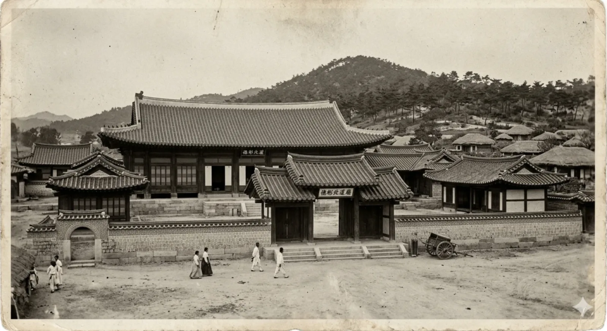
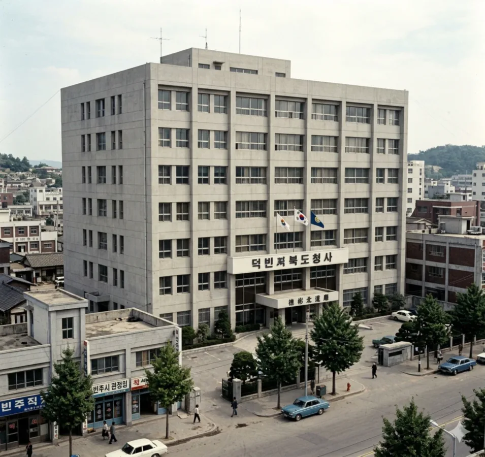

대한민국
광역자치단체
|
||||
| [ 펼치기 · 접기 ] | ||||
- 1. 개요
- 2. 연혁 (청사 이전의 역사)
- 2.1. 제1대 청사 (1896 ~ 1952)
- 2.2. 제2대 청사 (1953 ~ 2017)
- 2.3. 제3대 신청사 (2017 ~ 현재)
- 3. 역대 도지사
- 4. 조직 및 산하기관
- 5. 이용 가능한 대중교통
- 6. 여담 및 흑역사(?)
- 6.1. "아논 핫플" 천조읍의 기적
- 7. 관련 문서
- 8. 둘러보기
1. 개요
대한민국 덕빈북도의 도정을 총괄하는 행정기관이자 그 기관이 입주한 청사. 도청 소재지는 도내 최대 도시인 빈주시 가원구 천조읍 증림리 27-2이다.
1896년 13도제 실시로 덕빈북도가 탄생할 당시에는 현 효빈광역시 지역에 관찰사영(도청)을 두었으나, 한국전쟁으로 건물이 전소된 후 1953년 원래의 맹주였던 빈주시 구도심(빈성구 관동)으로 복귀하였다. 이후 청사 노후화와 행정 구역 확장에 따른 공간 부족 문제를 해결하기 위해 2017년 3월 15일, 현재의 천조신도시로 대대적인 이전을 단행했다.
신청사는 덕빈북도의 상징인 백로가 날개를 펴고 비상하는 웅장한 모습을 형상화하여 건축되었으며, 거대한 유리궁전 디자인 덕분에 가원구의 독보적인 랜드마크로 자리 잡았다. 청사 앞 잔디광장은 주말마다 도민들의 피크닉 명소로 쓰이며, 때로는 대규모 집회(...)가 열리는 민주주의의 현장이 되기도 한다.
2. 연혁 (청사 이전의 역사)
덕빈북도청의 역사는 그야말로 "이별과 재회, 그리고 확장의 역사"로 요약된다. 무려 세 번이나 청사를 옮기며 파란만장한 세월을 겪어왔다.

1896년 ~ 1952년 (전소)

1953년 ~ 2017년 (현 빈성구청)

2017년 ~ 현재
2.1. 제1대 청사 (1896 ~ 1952): 효빈의 셋방살이
- 위치: 구 효빈군 (현 효빈광역시청 인근 부지)
- 역사: 1883년 빈주에서 일어난 '계미군란(빈주전역의 군인의 난)'과 대홍수 크리로 빈주 관아가 박살난 뒤, 임시방편으로 효빈에 도 관아를 둔 것이 1896년 13도제 실시 이후에도 그대로 굳어졌다.
빈주의 뼈아픈 굴욕 - 최후: 1952년 한국전쟁 중 폭격으로 청사가 완전히 파괴되면서 역사 속으로 사라졌다.
2.2. 제2대 청사 (1953 ~ 2017): 빈주로의 귀환
- 위치: 빈주시 빈성구 관동 일대 (구도심)
- 역사: 전쟁 직후인 1953년, 도청을 70년 만에 본래의 주인인 빈주시로 복귀시켰다. 권위주의 시대 특유의 실용적이고 네모반듯한 콘크리트 성냥갑 디자인을 자랑했다. 주변으로 도의회, 경찰청 등이 모여들어 거대한 행정 타운을 형성했다.
- 이전 사유: 2000년대 들어 건물이 심각하게 낡고 좁아져, 주차난은 기본이요 일부 부서는 컨테이너 가건물에서 업무를 보는 안습한 상황이 펼쳐졌다. 결국 천조신도시 개발 계획과 맞물려 신청사 건립이 결정되었다. 현재는 빈성구청 및 산하기관 건물로 리모델링되어 쓰이고 있다.
2.3. 제3대 신청사 (2017 ~ 현재): 천조신도시 시대
- 위치: 빈주시 가원구 천조읍 증림리 27-2 (천조신도시)
- 특징: 2017년 3월 15일 업무 개시. 백로를 모티브로 한 세련된 외관을 뽐낸다. 도청사 옆으로 도의회, 교육청 등이 줄지어 입주해 완벽한 '행정복합타운'을 완성했다. 도청 이전 버프로 천조읍은 인구 7만이 넘는 맘모스급 읍(邑)으로 성장했다.
3. 역대 도지사
초대 임명직 관선 도지사부터 현재의 제38대 도지사까지, 덕빈북도 행정을 이끌어온 수장들의 역사이다. 특히 민선 시대 이후로는 특정 정당의 절대적인 텃밭으로 굳어지는 양상을 보인다.
| 대수 | 이름 | 임기 | 정부/당적 | 출신지 | 비고 |
|---|---|---|---|---|---|
| 관선 1차 (임명직) | |||||
| 1대 | 김영기 (金榮基) | 1948년 9월 15일 ~ 1949년 8월 20일 | 이승만 정부 | - | 초대 도지사. |
| 2대 | 박동식 (朴東植) | 1949년 8월 21일 ~ 1949년 12월 10일 | 이승만 정부 | - | |
| 3대 | 최진호 (崔鎭浩) | 1949년 12월 11일 ~ 1951년 10월 12일 | 이승만 정부 | - | |
| 4대 | 이병규 (李秉圭) | 1951년 10월 13일 ~ 1952년 9월 20일 | 이승만 정부 | - | |
| 5대 | 정기선 (鄭基善) | 1952년 9월 21일 ~ 1955년 8월 28일 | 이승만 정부 | - | |
| 6대 | 황도영 (黃道永) | 1955년 8월 29일 ~ 1956년 9월 15일 | 이승만 정부 | - | |
| 7대 | 윤성민 (尹成敏) | 1956년 9월 16일 ~ 1957년 3월 5일 | 이승만 정부 | - | |
| 8대 | 장수환 (張守煥) | 1957년 3월 6일 ~ 1959년 5월 18일 | 이승만 정부 | - | |
| 9대 | 신재문 (申재문) | 1959년 5월 19일 ~ 1960년 5월 8일 | 이승만 정부 | - | |
| 10대 | 강대현 (姜大賢) | 1960년 5월 9일 ~ 1960년 6월 30일 | 허정 내각 | - | |
| 민선 (선출직) | |||||
| 13대 | 조용철 (趙容哲) | 1960년 12월 29일 ~ 1961년 5월 23일 | 민주당 | 덕북 서진 | 5.16 군사정변으로 인해 해임 |
| 관선 2차 (임명직) | |||||
| 14대 | 권태영 (權泰榮) | 1961년 5월 25일 ~ 1961년 8월 18일 | 국가재건최고회의 | - | |
| 15대 | 송민우 (宋敏宇) | 1961년 8월 19일 ~ 1963년 12월 10일 | 국가재건최고회의 | - | |
| 16대 | 임재석 (林載錫) | 1963년 12월 11일 ~ 1968년 2월 25일 | 박정희 정부 | - | |
| 17대 | 오준호 (吳俊鎬) | 1968년 2월 26일 ~ 1971년 6월 18일 | 박정희 정부 | - | |
| 18대 | 백창수 (白昌洙) | 1971년 6월 19일 ~ 1973년 10월 15일 | 박정희 정부 | - | |
| 19대 | 서영환 (徐永煥) | 1973년 10월 16일 ~ 1978년 12월 20일 | 박정희 정부 | - | |
| 20대 | 구본진 (具本鎭) | 1978년 12월 21일 ~ 1980년 7월 12일 | 박정희 정부 | - | |
| 21대 | 안재훈 (安載勳) | 1980년 7월 13일 ~ 1983년 10월 8일 | 최규하 정부 | - | |
| 22대 | 홍경수 (洪景洙) | 1983년 10월 9일 ~ 1986년 8월 20일 | 전두환 정부 | - | |
| 23대 | 문상원 (文相元) | 1986년 8월 21일 ~ 1988년 5월 15일 | 전두환 정부 | - | |
| 24대 | 유동민 (柳東敏) | 1988년 5월 16일 ~ 1990년 6월 12일 | 노태우 정부 | - | |
| 25대 | 차현기 (車賢基) | 1990년 6월 13일 ~ 1992년 4월 18일 | 노태우 정부 | - | |
| 26대 | 손정호 (孫正浩) | 1992년 4월 19일 ~ 1993년 3월 1일 | 노태우 정부 | - | |
| 27대 | 오창석 (吳昌碩) | 1993년 3월 2일 ~ 1994년 9월 18일 | 김영삼 정부 | - | 훗날 민선 1기로 화려하게 복귀한다. |
| 28대 | 하태진 (河泰鎭) | 1994년 9월 19일 ~ 1995년 6월 30일 | 김영삼 정부 | - | 마지막 관선 도지사. |
| 민선 (선출직) | |||||
| 29대 | 오창석 (吳昌碩) | 1995년 7월 1일 ~ 1998년 6월 30일 | 민주당 | 덕북 군천 | 관선 출신 민선 도지사. 27대 도지사를 역임했다. |
| 30대 | 이태식 (李太植) | 1998년 7월 1일 ~ 2002년 6월 30일 | 새정치국민회의 | 덕북 천주 | |
| 31대 | 2002년 7월 1일 ~ 2006년 6월 30일 | 새천년민주당 | 재선 성공. | ||
| 32대 | 한광호 (韓廣護) | 2006년 7월 1일 ~ 2010년 6월 30일 | 열린우리당 | 덕북 덕현 | |
| 33대 | 2010년 7월 1일 ~ 2014년 6월 30일 | 민주당 | 재선 성공. | ||
| 34대 | 송지훈 (宋智勳) | 2014년 7월 1일 ~ 2018년 6월 30일 | 새정치민주연합 | 덕북 강주 | |
| 35대 | 강수성 (姜壽星) | 2018년 7월 1일 ~ 2022년 6월 30일 | 더불어민주당 | 덕북 천주 | |
| 36대 | 2022년 7월 1일 ~ 2026년 6월 30일 | 재선 성공. | |||
| 37대 | 2026년 7월 1일 ~ 재임 중 | 3선 성공. 9회 지선 압승. | |||
4. 조직 및 산하기관
- 도지사 (선출직 광역자치단체장)
- 행정부지사 (행정안전부 파견, 윤산진)
- 경제문화부지사 (정무직, 고상현)
주요 직속기관 및 사업소
- 덕빈북도농업기술원
- 덕빈북도보건환경연구원
- 덕빈북도소방본부
- 덕빈북도공무원교육원
출자·출연기관
- 덕빈북도개발공사: 원래는 도내 택지 및 산단 개발이 주업무여야 하는데, 도지사들이 하도 이곳저곳 땅을 파서 전철을 깔아대는 바람에 도민들에게는 사실상 '덕빈철도공사' 취급을 받는다.
- 덕빈문화재단
- 덕빈경제진흥원
- 덕빈은행: IMF 때도 살아남은 기적의 지방은행. 본점이 빈주시에 있으며 옆 동네 효빈은행과는 피 터지는 영혼의 라이벌이다.
5. 이용 가능한 대중교통
도청 소재지답게 빈주 시내버스와 광역철도망이 밀집해 있다.
5.1. 광역전철
- 빈주권 광역철도 (Korail Blue): 증림역 하차 후 도보 5분. 도청 이전과 함께 이용객이 폭발적으로 늘어나 하루 평균 1만 8천 명이 오가는 핵심 역이 되었다.
5.2. 시내/마을버스
- 간선버스 (#01B7ED): 100, 200, 500번 (증림역 또는 도청 앞 정류장 하차)
- 마일버스 (#A664A0): 빈주01, 빈주02번
6. 여담 및 흑역사(?)
6.1. "아논 핫플" 천조읍의 기적
"아논쨩 보러 도청 앞까지 왔습니다!"
- 어느 뱅드림 팬의 성지순례 후기
덕빈북도청이 자리잡은 가원구 천조읍(千早邑)은 본래 "천 개의 아침이 밝아오는 땅"이라는 근본 있는 지명 유래를 갖고 있다. 그러나 하필 일본 애니메이션 《BanG Dream! It's MyGO!!!!!》의 인기 캐릭터 치하야 아논(千早 愛音)의 성씨와 한국식 한자가 완벽하게 일치하는 바람에, 옆동네 효빈시의 어마어마한 서브컬처 인프라와 결합하여 졸지에 오타쿠 성지로 전락(?)해버렸다.
설상가상으로 인근 아천동에는 아예 아논동(阿論洞)이라는 법정동까지 있어서, 천조읍 도청 앞 잔디광장에서 사진을 찍고 아논동 마을회관으로 걸어가는 이른바 "아논 코스"가 존재한다. 심지어 도청 인근 증림리에 효빈교통공사 공식 굿즈샵까지 입점하면서 빼도 박도 못하게 성지로 확정되었다. 주말마다 가방에 분홍색 뱃지를 주렁주렁 매단 청년들이 도청 앞을 배회하는 진풍경을 볼 수 있다.
결국 이 엄청난 화제성에 주목한 덕빈북도청에서 진짜로 공식 아논 콜라보 행사를 추진하는 기염을 토했다! 행사 발표 직후 일부 보수 성향 정치인들이 "도청 앞마당에서 일본 서브컬처 행사가 웬 말이냐"며 야랄을 떨며 맹비난을 쏟아냈으나, 도청 측은 이를 쿨하게 씹고 행사를 강행했다. 결과는 그야말로 대성공. 콜라보 기간 동안 전국 각지에서 몰려든 엄청난 인파 덕분에 증림역 주변 상가와 천조신도시 배후 상권이 전례 없는 초대박 호황을 누리게 되면서, 반대하던 정치인들은 꿀 먹은 벙어리가 되고 말았다. 역시 금융치료 앞에서는 장사 없다 이 사건 이후 증림역 상인회는 아논의 생일마다 자발적으로 축하 현수막을 내걸 정도로 서브컬처 친화적인 동네가 되었다 카더라.
7. 관련 문서
8. 둘러보기

| 지방자치 | ||||
|---|---|---|---|---|
| 법조 | ||||
| 교육 | ||||
|
치안
소방
|
||||
|
보건
세무
병무 / 환경
|
||||


- [1] 증림역은 빈주권 광역철도(K21) 노선으로 도청 바로 앞(도보 5분 거리)에 위치하여 공무원 및 방문객 수요를 책임진다. ^